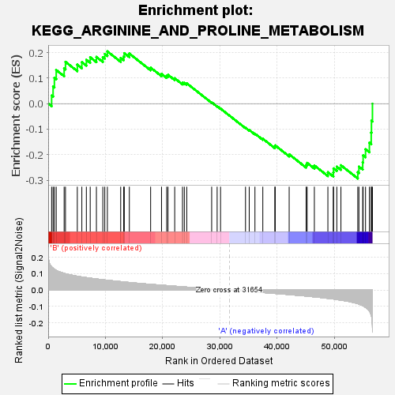

| | | Dataset | my.my.cls#B_versus_A.my.cls#B_versus_A_repos |
| Phenotype | my.cls#B_versus_A_repos |
| Upregulated in class | A |
| GeneSet | KEGG_ARGININE_AND_PROLINE_METABOLISM |
| Enrichment Score (ES) | -0.29357234 |
| Normalized Enrichment Score (NES) | -0.9860028 |
| Nominal p-value | 0.44252872 |
| FDR q-value | 0.6330851 |
| FWER p-Value | 0.998 |
Table: GSEA Results Summary

Fig 1: Enrichment plot: KEGG_ARGININE_AND_PROLINE_METABOLISM
Profile of the Running ES Score & Positions of GeneSet Members on the Rank Ordered List
| SYMBOL | TITLE | RANK IN GENE LIST | RANK METRIC SCORE | RUNNING ES | CORE ENRICHMENT | | 1 | AZIN2 | na | 598 | 0.142 | 0.0318 | No |
| 2 | GLUL | na | 856 | 0.134 | 0.0671 | No |
| 3 | ALDH4A1 | na | 1081 | 0.128 | 0.1014 | No |
| 4 | PYCR2 | na | 1400 | 0.121 | 0.1320 | No |
| 5 | SMS | na | 2785 | 0.103 | 0.1381 | No |
| 6 | P4HA3 | na | 3016 | 0.101 | 0.1640 | No |
| 7 | NOS3 | na | 5085 | 0.085 | 0.1529 | No |
| 8 | MAOB | na | 5877 | 0.080 | 0.1629 | No |
| 9 | CKB | na | 6664 | 0.076 | 0.1718 | No |
| 10 | ALDH1B1 | na | 7337 | 0.073 | 0.1818 | No |
| 11 | GLS | na | 8420 | 0.068 | 0.1831 | No |
| 12 | LAP3 | na | 9540 | 0.064 | 0.1823 | No |
| 13 | GLUD1 | na | 9882 | 0.062 | 0.1948 | No |
| 14 | OAT | na | 10335 | 0.061 | 0.2049 | No |
| 15 | P4HA1 | na | 12659 | 0.052 | 0.1794 | No |
| 16 | CKM | na | 13182 | 0.050 | 0.1851 | No |
| 17 | GAMT | na | 13288 | 0.050 | 0.1980 | No |
| 18 | ASS1 | na | 14169 | 0.047 | 0.1964 | No |
| 19 | GLS2 | na | 17888 | 0.035 | 0.1412 | No |
| 20 | SAT2 | na | 19788 | 0.030 | 0.1166 | No |
| 21 | PYCR1 | na | 20692 | 0.028 | 0.1089 | No |
| 22 | PRODH | na | 20921 | 0.027 | 0.1130 | No |
| 23 | NAGS | na | 22090 | 0.024 | 0.0995 | No |
| 24 | NOS1 | na | 23452 | 0.020 | 0.0815 | No |
| 25 | DAO | na | 23768 | 0.020 | 0.0818 | No |
| 26 | ALDH7A1 | na | 24194 | 0.018 | 0.0798 | No |
| 27 | ALDH18A1 | na | 28545 | 0.008 | 0.0052 | No |
| 28 | SRM | na | 29500 | 0.005 | -0.0101 | No |
| 29 | ALDH3A2 | na | 30096 | 0.004 | -0.0195 | No |
| 30 | GLUD2 | na | 34454 | -0.007 | -0.0945 | No |
| 31 | AOC1 | na | 35100 | -0.009 | -0.1033 | No |
| 32 | P4HA2 | na | 36101 | -0.011 | -0.1177 | No |
| 33 | SAT1 | na | 37475 | -0.015 | -0.1376 | No |
| 34 | CKMT2 | na | 39570 | -0.020 | -0.1686 | No |
| 35 | ARG2 | na | 39643 | -0.020 | -0.1638 | No |
| 36 | GOT2 | na | 42076 | -0.027 | -0.1987 | No |
| 37 | OTC | na | 45034 | -0.036 | -0.2401 | No |
| 38 | NOS2 | na | 45216 | -0.037 | -0.2324 | No |
| 39 | PRODH2 | na | 46476 | -0.041 | -0.2423 | No |
| 40 | AGMAT | na | 48837 | -0.050 | -0.2691 | No |
| 41 | GOT1 | na | 49786 | -0.054 | -0.2696 | Yes |
| 42 | AMD1 | na | 49823 | -0.054 | -0.2540 | Yes |
| 43 | ARG1 | na | 50395 | -0.057 | -0.2471 | Yes |
| 44 | GATM | na | 51115 | -0.061 | -0.2416 | Yes |
| 45 | ODC1 | na | 54058 | -0.083 | -0.2689 | Yes |
| 46 | MAOA | na | 54256 | -0.085 | -0.2469 | Yes |
| 47 | ASL | na | 54918 | -0.095 | -0.2303 | Yes |
| 48 | ACY1 | na | 54989 | -0.096 | -0.2028 | Yes |
| 49 | CPS1 | na | 55410 | -0.105 | -0.1789 | Yes |
| 50 | ALDH9A1 | na | 56081 | -0.126 | -0.1531 | Yes |
| 51 | CKMT1A | na | 56400 | -0.152 | -0.1133 | Yes |
| 52 | CKMT1B | na | 56445 | -0.158 | -0.0669 | Yes |
| 53 | ALDH2 | na | 56619 | -0.235 | 0.0000 | Yes |
Table: GSEA details [plain text format]
Fig 2: KEGG_ARGININE_AND_PROLINE_METABOLISM
Blue-Pink O' Gram in the Space of the Analyzed GeneSet
Fig 3: KEGG_ARGININE_AND_PROLINE_METABOLISM: Random ES distribution
Gene set null distribution of ES for KEGG_ARGININE_AND_PROLINE_METABOLISM